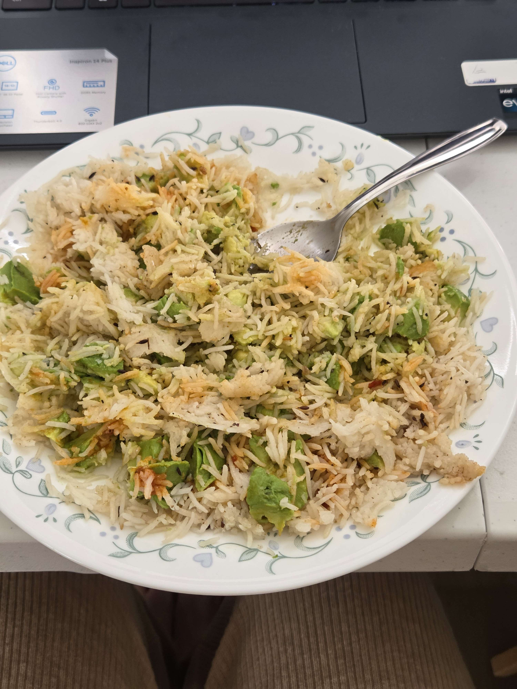

Sakshi's Fun Jeera Rice
Home Page

Description
Now, last but not least, this is something I discovered on accident while trying to make normal Jeera rice for the first time on my own.
I'll go into more detail about how to make jeera rice later in this webpage, but essentially, my idea to add avocado came because my avocados
were starting to go bad so I had to use them in something haha. Then, once the avocado was added, I was craving a bit more of a kick as the
avocado made the rice have an almost creamy texture. I achieved that kick by adding some schezwan chutney, which we all should be familiar with by now.
What resulted was the perfect blend of the flavors of home, mixed in with something fresh and vibrant!
Ingredients
- Instapot (or your desired style of pressure cooker)
- cumin seeds
- cumin powder
- coriander powder
- garam masala
- olive oil
- avocado
- ching's schezwan chutney
Steps
- heat up some oil in the instapot (use the saute function) and once it's sufficintly hot, put in some cumin seeds and wait for them to pop. Also add some cumin powder, coriander powder, and garam masala for the vibes
- in parallel, start washing some rice. I used basmati long grain rice in the picture but any rice will do
- once the cumin seeds start to pop, add in the rice, water, and cook the rice! should take up to an hour for it to cook and cool down
- scoop some rice out on a plate, and add some mashed avocado and schezwan chutney
- enjoy!